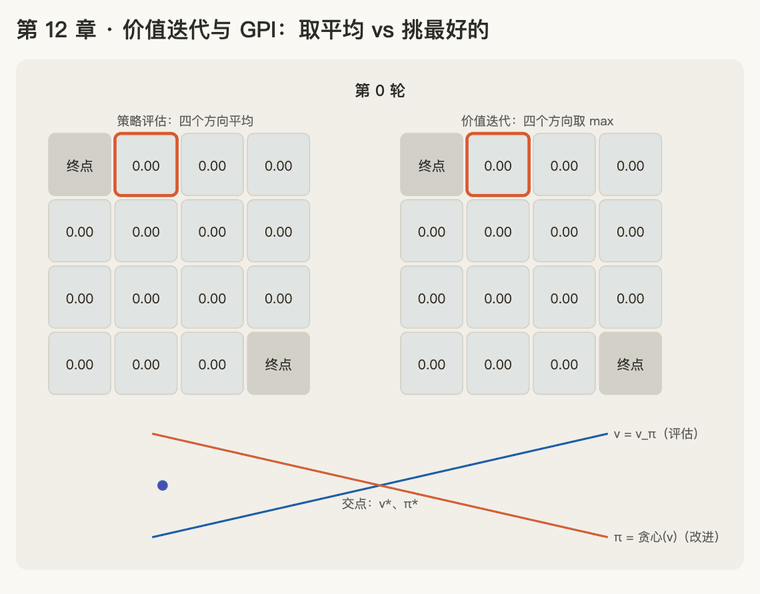

第 12 章 · 价值迭代与 GPI：评估只算一轮就改进
本章回答：能不能把"评估"和"改进"合成一步？价值迭代和第 9 章的最优方程是什么关系？为什么说几乎所有 RL 算法都是"广义策略迭代"？
讲解日期：2026-11-13 · 上一章：第 11 章 策略改进与策略迭代 · 下一章：第 13 章 探索与利用
对应原文：Sutton & Barto §4.4 Value Iteration（L6153–L6315，式 4.10，算法框 L6207）、§4.5 Asynchronous DP（L6316–L6371）、§4.6 Generalized Policy Iteration（L6372–L6445）、§4.7–4.8（L6446–L6584）
本章缩写：VI = Value Iteration（价值 / 迭代）；GPI = Generalized Policy Iteration（广义 / 策略 / 迭代）；DP 见第 10 章。全部缩写见 附录 · 缩写与术语表
讲解
第一步：把评估和改进合成一个式子（2026-11-13）
第 11 章末尾的想法：评估只算一轮就改进。
评估一轮（第 10 章）：\(\sum_a \pi(a \mid s)\,[\dots]\)，按策略平均；改进（第 11 章）：挑方括号最大的动作。两步合起来：直接取最大，不要中间那份策略了（式 4.10，L6189）：
认出来了吗：这就是第 9 章的 Bellman 最优方程，只是左边变成了新值、右边用旧值（和第 10 章把期望方程当更新规则是同一个套路）。
| 第 10 章 策略评估 | 本章 价值迭代 | |
|---|---|---|
| 套的方程 | Bellman 期望方程（第 8 章） | Bellman 最优方程（第 9 章） |
| 选动作那一层 | 按 π 平均 | 取 max |
| 收敛到 | \(v_\pi\) | \(v_*\) |
类比：边走边改路线。 策略迭代像"把整条路线跑熟了再改"；价值迭代像"每走一段就按目前的了解挑一次最好的方向"。
一句话：价值迭代 = 把 Bellman 最优方程当更新规则反复套；评估一轮 + 改进一次合成了一个 max。
第二步：4×4 网格，4 轮就到最优（2026-11-13）
还是例 4.1 的 4×4 网格（每步 −1，两角是终点，γ = 1）。从全 0 出发：
第 1 轮：每个非终点格子，四个方向都是"−1 + 0"，max 是 −1。
第 2 轮：挨着终点的格子，有一个方向是"−1 + 0 = −1"，max 取 −1；不挨着的格子，最好也只能"−1 + (−1) = −2"。
第 1 轮 第 2 轮
0 -1 -1 -1 0 -1 -2 -2
-1 -1 -1 -1 -1 -2 -2 -2
-1 -1 -1 -1 -2 -2 -2 -1
-1 -1 -1 0 -2 -2 -1 0
看出和第 10 章的区别：第 10 章挨着终点的格子是"四个方向平均"（−1.75），这里是"挑最好的方向"（−1）。
再算两轮就不动了（第 4 轮确认没变）：
0 -1 -2 -3
-1 -2 -3 -2
-2 -3 -2 -1
-3 -2 -1 0
每格的值 = −（离最近终点的步数）。最后按第 9 章"往前看一步挑最大"读出最优策略，和第 11 章策略迭代得到的一样。
| 算法 | 4×4 网格要几轮 | 每轮做什么 |
|---|---|---|
| 策略迭代（第 11 章） | 3 次改进，每次里面评估 200 多轮 | 评估到底 + 改进 |
| 价值迭代（本章） | 4 轮 | 一个 max |
| 5×5 网格价值迭代 | 154 轮（γ = 0.9，阈值 \(10^{-6}\)） | \(v_*(A) = 24.4\)，同第 9 章 |
一句话：价值迭代每轮每格"挑最好的方向"，4×4 网格 4 轮就停在 \(v_*\)；最后再贪心一次读出策略。
第三步：不必每轮扫遍所有格子：异步 DP（2026-11-13）
问题：到现在为止每一轮都要把所有状态更新一遍（叫一次 sweep，"扫一遍"）。双陆棋有 \(10^{20}\) 个状态，扫一遍都要上千年（L6324–L6327）。
异步 DP asynchronous DP（§4.5，L6316–L6371）：不按"一轮一轮"来，想更新哪个状态就更新哪个，用的是其他状态当前的值（像第 10 章第四步的原地更新）。只要每个状态都还会被更新到，就仍然收敛。
好处：可以把力气花在重要的状态上。比如让智能体边玩边算，只更新它实际走到的那些状态（L6354–L6360）。这一点很关键：后面第 14–16 章的学习算法，本质上都是"只更新走到的状态"。
一句话：异步 DP 不必每轮扫遍所有状态，挑着更新也收敛；只更新走到的状态，是通往"边玩边学"的桥。
第四步：广义策略迭代：评估和改进，你推我拉（2026-11-13）
回头看第 10–12 章：
| 算法 | 评估做多少 | 改进做多少 |
|---|---|---|
| 策略迭代 | 算到底 | 每格都改 |
| 价值迭代 | 一轮 | 每格都改（藏在 max 里） |
| 异步 DP | 挑几个状态 | 挑几个状态 |
它们都在做同一件事：评估（让价值跟上当前策略）和改进（让策略对当前价值贪心）两个过程来回拉扯。书里把这个总框架叫广义策略迭代 GPI（§4.6，L6372–L6445）。
你推我拉（L6401–L6417，"competing and cooperating" L6411）：
- 评估把价值往"和策略一致"推，但策略一改，价值又不一致了；
- 改进把策略往"对价值贪心"推，但价值一变，策略又不贪心了；
- 两股力量来回拉，最后同时满足两条：价值和策略一致、策略对价值贪心，这时就是 \(v_*\) 和 \(\pi_*\)。
类比：两个人拉一根绳调帐篷。 一人调高度，一人调松紧，互相影响，来回调几次，帐篷就搭正了。
原文 L6392–L6393：几乎所有强化学习方法都可以看成 GPI（"Almost all reinforcement learning methods are well described as GPI"）。第 6 章第四步的"评估 → 改进"循环，就是 GPI 的另一种画法。
DP 的局限（§4.7，L6446 起）：DP 必须知道 p。真实世界通常不知道环境的概率表：下一章开始，智能体只能自己去试。
一句话：GPI = 评估和改进你推我拉，最后同时满足就是最优；几乎所有 RL 算法都是它；DP 的毛病是要知道 p。
动画演示：价值迭代每轮挑最好的方向；GPI 的两股力量

可交互版：animations/l12-value-iteration.html（要能点按钮、拖滑块，需要用本地服务打开，见 animations/README.md"跑起来看"）。
怎么看：
- 左右两张 4×4 网格：左边策略评估（随机策略，取平均），右边价值迭代（取 max）；
- 每帧两边各更新一轮，高亮挨着终点那格：左边 −1.75，右边 −1（第二步）；
- 右边 4 轮就不变了，左边还要很久；
- 下方是 GPI 的示意：两条线（"v = v_π"和"π = 贪心(v)"），点在两条线之间来回走，最后到交点（第四步）。
练习与作答记录
题 1：价值迭代第 2 轮，4×4 网格第 1 行第 3 列那格为什么是 −2？列出它四个方向"−1 + 邻居第 1 轮的值"。
作答：（待作答）
题 2：价值迭代套的是哪个方程？策略评估套的是哪个？两者只差哪一层？
作答：（待作答）
题 3：用 GPI 的说法描述第 11 章的策略迭代：评估做了多少，改进做了多少？
作答：（待作答）
口诀
评估一轮就改进，合成一个 max；
价值迭代套最优方程，策略评估套期望方程；
不必扫遍，挑着更新也收敛；
评估改进你推我拉，所有方法都是 GPI；DP 要知道 p。
本章复习卡片
- R20（价值迭代 式 4.10：最优方程当更新规则；和策略评估的区别）
- R21（广义策略迭代 GPI：评估和改进你推我拉；DP 的局限是要知道 p）
附录 · 延伸阅读
留给以后深入学习用，不影响本章主线。★ 是建议先读的。L 行号指
materials/text/books/sutton-barto-RLbook2020.txt。
推荐阅读
| 读什么 | 读哪里 | 读它为了什么 |
|---|---|---|
| ★ Sutton & Barto §4.4 | L6153–L6315（式 4.10，算法框 L6207，例 4.3 赌徒问题） | 价值迭代 |
| Sutton & Barto §4.5 | L6316–L6371 | 异步 DP：不必每轮扫遍 |
| ★ Sutton & Barto §4.6 | L6372–L6445 | GPI 的图和"你推我拉"的解释 |
| Sutton & Barto §4.7–4.8 | L6446–L6584 | DP 的效率、维度灾难、本章总结 |
| CS 285 第 7 讲 | lec-07.txt L120–L180（Fitted Q-iteration） |
价值迭代换成神经网络就是 fitted Q-iteration，接第 17–18 章 |
| Hands-on-RL 第 4 章 | chinese/Hands-on-RL/第4章-动态规划算法.ipynb |
中文：策略迭代和价值迭代的对比代码 |
数学原理
- 最优 Bellman 算子是压缩映射：\(T_* v(s) = \max_a \sum p\,[r + \gamma v(s')]\) 满足 \(\lVert T_* u - T_* w\rVert_\infty \le \gamma \lVert u - w\rVert_\infty\)（因为 \(|\max f - \max g| \le \max |f - g|\)），所以 \(v_k \to v_*\)。
- 停止和误差：若 \(\lVert v_{k+1} - v_k\rVert_\infty < \theta\)，则 \(\lVert v_{k+1} - v_*\rVert_\infty < \frac{\gamma\theta}{1-\gamma}\)；γ 越接近 1，阈值要设得越小。
- 截断的策略迭代：评估做 m 轮再改进。m = 1 是价值迭代，m = ∞ 是策略迭代，中间的都收敛（截断策略迭代，L6229–L6242）。
- 维度灾难 curse of dimensionality：状态数随变量个数指数增长（L6464）；这是第 17 章要用函数近似的原因。
公式清单
| 公式 | 意思 |
|---|---|
| \(v_{k+1}(s) = \max_a \sum_{s', r} p\,[r + \gamma v_k(s')]\) | 价值迭代（式 4.10） |
| \(\pi(s) = \arg\max_a \sum_{s', r} p\,[r + \gamma v(s')]\) | 收敛后读出策略 |
| \(v_k \to v_*\)（γ < 1） | 压缩映射保证收敛 |
代码对照：把本章的数字用代码算一遍
代码在
cs285-deep-rl/solutions/chapter-code/ch12_value_iteration.py，测试tests/test_ch10_16.py（检查价值迭代和策略迭代结果相同）。
同一章的 Jupyter notebook：cs285-deep-rl/solutions/chapter-code/notebooks/ch12_value_iteration.ipynb（讲解和代码放在一起，一格一格边读边跑；代码都写在格子里，Colab 也能直接打开）。
bash cd cs285-deep-rl/solutions/chapter-code uv run python ch12_value_iteration.py
| 讲义 | 代码 | 跑出来 |
|---|---|---|
| 4×4 价值迭代 | value_iteration(P, 1.0) |
4 轮，0、−1、−2、−3 … |
| 读出策略 | greedy_policy(P, v, 1.0) |
箭头指向最近终点 |
| 5×5 价值迭代 | value_iteration(G, 0.9) |
154 轮，\(v_*(A) = 24.4\) |
关键几行：
new = np.array([max(q_from_v(P, v, gamma, s, a) for a in P[s]) for s in P]) # 一个 max 搞定
代码里才看得到的：和第 10 章 sweep 比，只是把 sum(pa * ...) 换成了 max(...)。5×5 网格要 154 轮是因为 γ = 0.9：误差每轮只缩成 0.9 倍，要从 24 缩到 \(10^{-6}\)，大约要 \(\log(24 \times 10^6) / \log(1/0.9) \approx 160\) 轮。